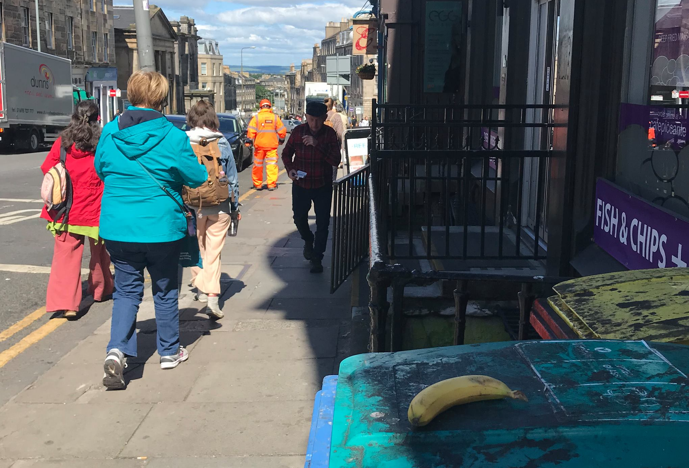

1) Spilled Drink
When I saw spilled soup on the saucer for the first time, my eyes popped out but got to like Scotland so much. It was incredible in Japan. If you work at a restaurant and a cafe in Japan, you have to go back to the kitchen to clean a saucer when you spilled drink and soup.
2) Banana on a street

I believed a story of slipping on a banana peel on a street was just in comics. So very suprised that there were many bananas on streets, here and there. Sometimes I found bananas not eaten yet but I was not brave enough to eat them.
3) "0 or 100"

As you can see, these 2 pictures are examples of "100". It was absolutely impossible for customers who were less than 5 feet to pick up the baskets. I didn't think so many costomers came in the Tesco express at the same time anyway. About second picture, now I know it is not special such burned breads are sold, but this was shocking for me at the first time. One of Japanese friend who saw this picture completely thought this was a car seat cushion.